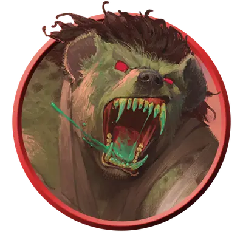

Одержимый гнолл
Gnoll Demoniac
Среднее Исчадие, Хаотичное Злое

Класс Защиты 16 Инициатива +4 (14)
Хиты 135 (18к8 + 54)
Скорость 30 футов
| мод | спас | ||
|---|---|---|---|
| СИЛ | 16 | +3 | +6 |
| ЛОВ | 12 | +1 | +1 |
| ТЕЛ | 17 | +3 | +6 |
| мод | спас | ||
|---|---|---|---|
| ИНТ | 14 | +2 | +2 |
| МДР | 15 | +2 | +5 |
| ХАР | 17 | +3 | +6 |
Чувства Тёмное зрение 60 футов, пассивное Восприятие 15
Языки Общий, Бездны, Гноллий
Опасность 8 (3 900 опыта; БВ +3)
Действия
Мультиатака. Гнолл совершает две атаки Демоническим ударом.
Демонический удар. Бросок рукопашной или дальнобойной атаки: +6, досягаемость 5 фт. или дистанция 60 фт. Попадание: 20 (5к6 + 3) урона Ядом.
Голод Йеногу (Перезарядка 5–6). Гнолл призывает 30-футовый Куб магической Темноты, исходящий из точки, которую гнолл видит в пределах 60 футов; эта область существует 1 минуту или пока гнолл Концентрируется на этом эффекте. Эта область становится Труднопроходимой местностью. Спасбросок Ловкости: Сл 14, любое существо, которое начинает свой ход в этой области или входит в неё впервые раз за ход. Провал: 28 (8к6) Некротического урона, и гнолл или видимое им существо по его выбору получает 10 Временных хитов. Успех: Только половина урона.
Бонусные действия
Буйство (2/день). Сразу после нанесения урона Окровавленному существу гнолл перемещается на расстояние вплоть до половины своей Скорости и совершает одну атаку Демоническим ударом.
Бонус мастерства +3
Среда обитания Леса, Луга, Пустыня, Холмы
Сокровища Личные, Оружейные
Гноллы
Дикие плотоядные бестии
Первые гноллы произошли от гиен, которые питались плотью, испорченной Бездной. Демонический владыка Йеногу был в восторге от их порочности и жестокости, поэтому способствовал росту их численности и помог им расселиться по всей мультивселенной. С тех пор гноллы стали злорадными слугами этого повелителя демонов и живут, чтобы сеять разрушения и пировать на руинах.
Одержимые гноллы — это гноллы-берсерки, которые прошли ритуал пожирания плоти, испорченной Бездной. Они воплощают в себе разрушительный голод Йеногу и с безрассудством бросаются в пучину сражения, не заботясь о собственном выживании. В своём диком, безумном неистовстве одержимые готовы сожрать даже других гноллов.